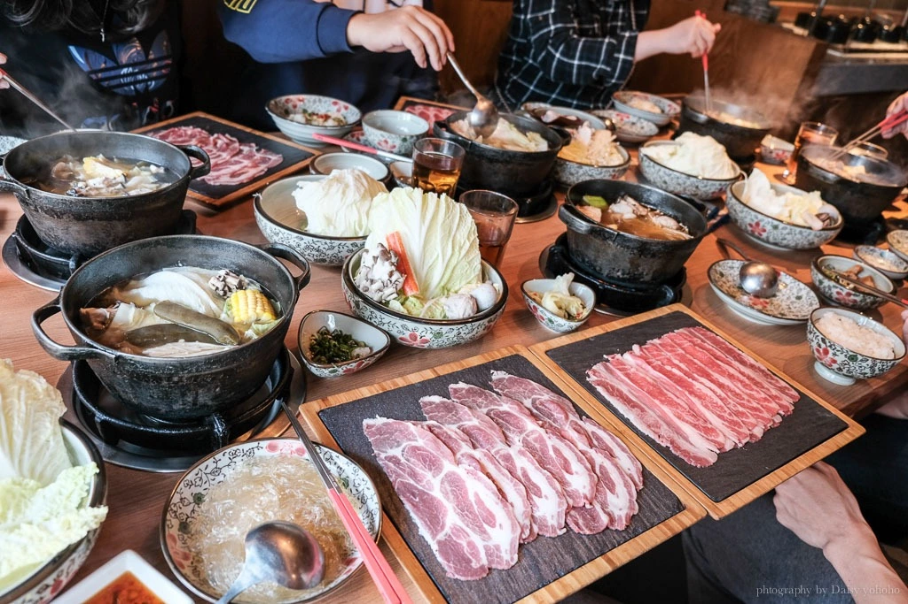

台中美食懶人包！92間台中食記整理，外地人來玩就是要吃這一些餐廳、小吃美食！

台中美食 … 吃吃喝喝在台中：）
身為一個在台中念大學的人，對於台中美食也可以說是略懂略懂來著。
從大學時就一路在台中到處吃餐廳、找美食，而到了大學畢業後，也是三不五時就回台中吃懷念的小吃，找熱門的火鍋、燒烤店吃，
當然還有許多知名甚至是得獎、認證的餐廳，從日本料理到義大利麵，再從吃到飽到牛排館，只能說台中好好吃，慢慢吃都吃不夠（笑）
台中火鍋
台中燒肉、燒烤、串燒
台中日式料理
台中義式、歐陸料理